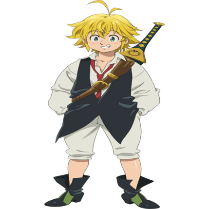

Selecione um Personagem

Meliodas
Meliodas, é o líder dos Sete Pecados Capitais e atual Rei de Liones,, carregando o título de Pecado da Ira do Dragão.



Meliodas, é o líder dos Sete Pecados Capitais e atual Rei de Liones,, carregando o título de Pecado da Ira do Dragão.